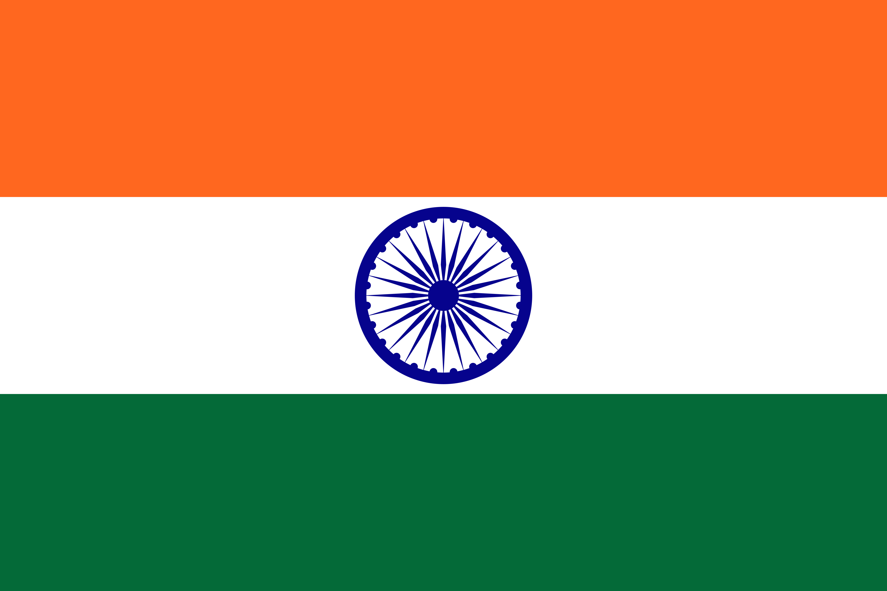
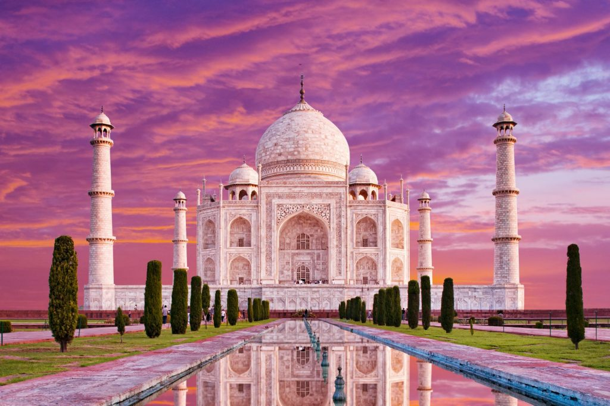
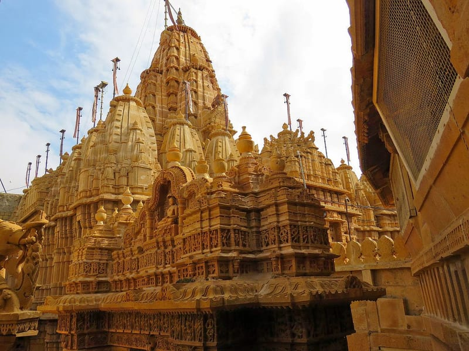
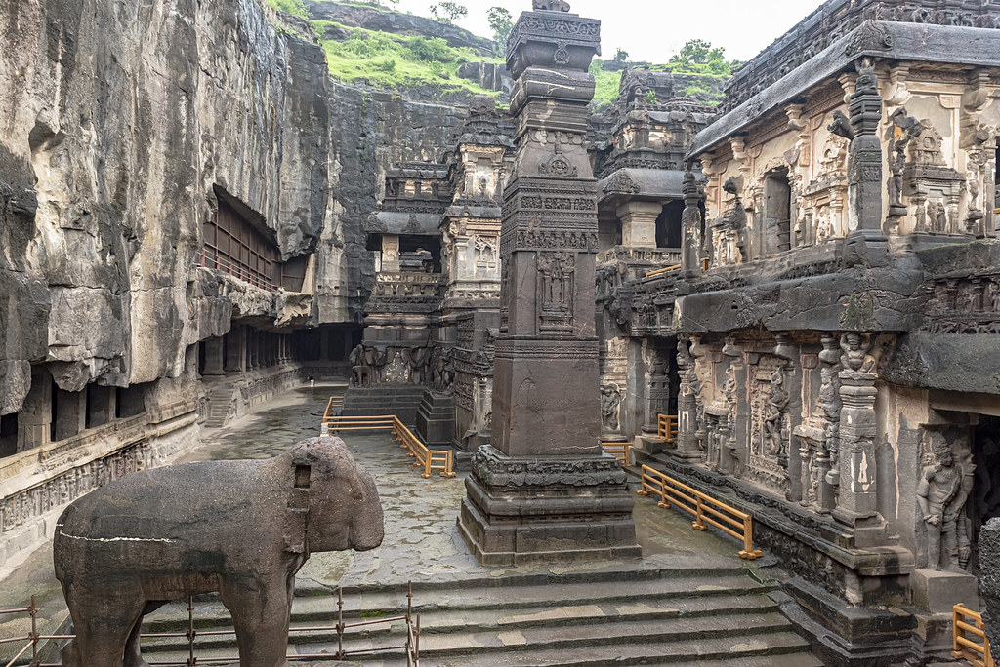
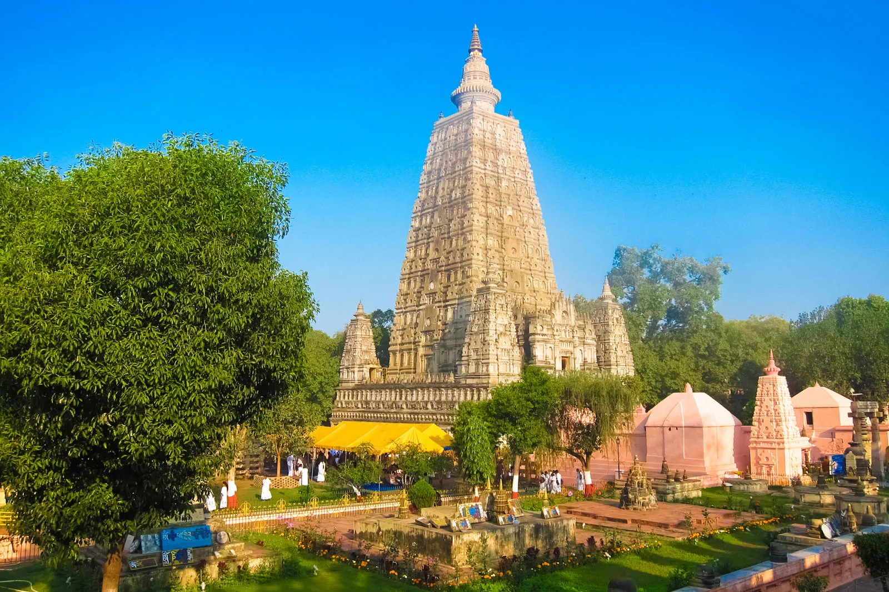
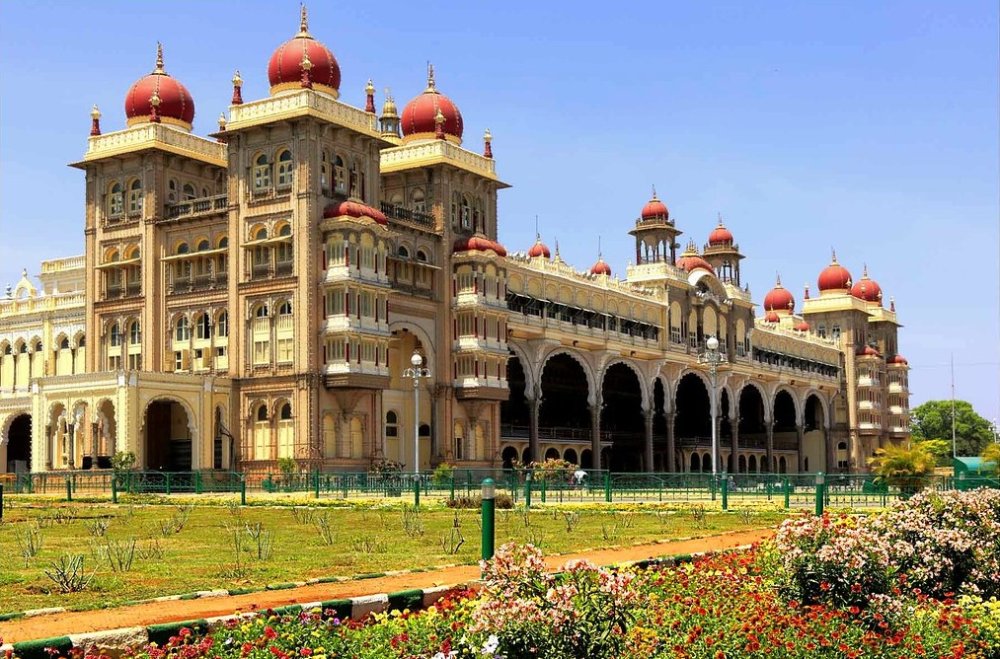
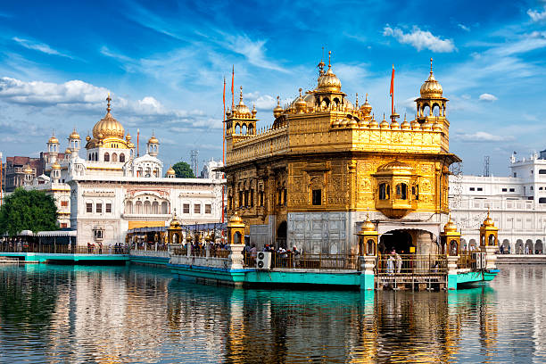

India este o țară din sudul Asiei. India se află pe locul 7 în ierarhia țărilor după suprafață, pe locul doi după numărul locuitorilor și este statul democratic cu cei mai mulți locuitori. India are o zonă de coastă cu o lungime de 7000 de km și granițe cu Pakistan la vest, Nepal, Republica Populară Chineză și Bhutan la nord-est, și Bangladesh și Myanmar la est. În Oceanul Indian, ea este adiacentă cu țările insulare Sri Lanka, Maldive și Indonezia.
Cămin al civilizației văii Indului, centrul a importante drumuri comerciale și vaste imperii, India a jucat un rol major în istoria umanității. Religii precum Hinduismul, Sikhismul, Budismul și Jainismul își au originea în India, în timp ce Islamul și Creștinismul se bucură de o bogată tradiție aici. Colonizată ca parte a Imperiului Britanic în secolul nouăsprezece, India și-a câștigat independența în 1947 ca națiune unificată după un efort susținut depus în această direcție.
DATE GENERALE

Denumirea oficiala: Republica India
Fusul orar: UTC +5:30
Capitala: New Delhi
Suprafata: 3.287.590 km2
Moneda: rupia indiana
Limba oficiala: hindi
Prefix telefonic international: +91
ATRACTII TURISTICE

Taj Mahal este un
monument în orașul Agra, India. A fost construit de împăratul Shah Jahan drept mausoleu pentru soția sa, Mumtaz Mahal, între 1630 și 1653. În 1983 Taj Mahal
a devenit parte din patrimoniul mondial UNESCO și rămâne și până astăzi printre cele mai vizitate și faimoase monumente din lume.
Complexul mai cuprinde în afară de palatul propriu zis și o moschee. Aparent s-ar putea spune că sunt de fapt două moschei, însă una dintre clădiri este
construită doar pentru simetrie, element-cheie în arhitectura monumentului. Înăuntrul domului se află sicriul împărătesei, încrustat cu pietre prețioase,
descrise ca fiind "proiectate de uriași și finisate de bijutieri". Singurul obiect asimetric din interiorul domului este sicriul împăratului care a fost
construit alături de cel a reginei, 35 de ani mai târziu. Clădirea este situată într-un decor natural și comunică cu exteriorul printr-o poartă înaltă și
masivă, care este simbolul clar al intrării în paradis. Aceasta era fabricată din argint masiv și nituită cu cuie de argint, însa, din cauză că era foarte
grea, s-a scufundat. A fost înlocuită cu una din alama, mult mai ușoară.

Jaisalmer este supranumit Oraşul de Aur, metropola fiind situată pe o creastă de gresie gălbuie, încoronată de un fort ce protejează palatul şi
templele fin sculptate. Fortul a fost construit în 1156 de către conducătorul Rajput Jaisal, care a fondat orașul în același timp. Este unul dintre cele
mai mari forturi din lume. Din păcate, starea Fortului se deteriorează rapid, deoarece apa de scurgere se strecoară în fundațiile sale.

Satul Ellora a devenit
renumit prin templurile-grotă, mănăstirile și capelele care se află la 2 km sud-est. Templurile săpate în stânca de bazalt, datează din perioada dintre
secolele 5 și 10 și au declarate în anul 1983 patrimoniu mondial UNESCO. Pesterile, cioplite in pantele unor dealuri joase, sunt o minune arhitecturala,
un amestec de temple Buddhiste, Hinduse si Jain, fiind in numar de 34. Cele 12 pesteri din partea sudica sunt Buddhiste, cele 17 pesteri din mijloc sunt
Hinduse, iar cele 5 pesteri din partea nordica sunt Jain. Sculpturile din pesterile Buddhiste infatiseaza gratia si nobilitatea lui Buddha. In pesterile
cu numerele 6 si 10 se gasesc atat imagini din credinta Buddhista, cat si imagini din credinta Hindusa. Pestera cu numarul 10 a fost dedicata lui
Vishwakarma, sfantul protector al mestesugarilor.

Templul Mahabodhi

Palatul Mysore

Templul de Aur din Amritsar
TRAVEL TIPS
Asigura-te ca ai in bagaj o varietate de medicamente.
 INDIA
INDIA